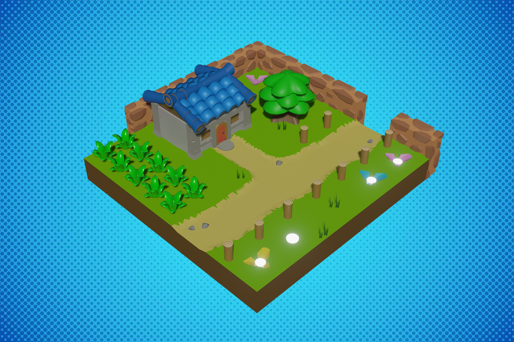
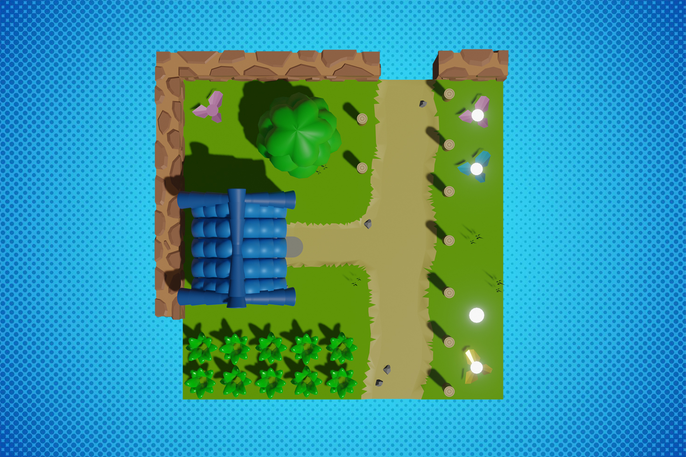

Rendu sans low poly cette fois-ci : Modélisation fortement inspiré de l'univers de "Link's awakening", pour sa magnifique pâte graphique. De plus un très bon exercice pour les outils "shader smooth" et le modifier "Subdivision" pour faire des personnages par exemple...

Vue générale :
Vue du dessus :
